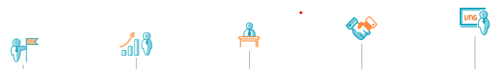

QUÁ TRÌNH HÌNH THÀNH VÀ PHÁT TRIỂN
2004-2005 BỨT PHÁ
2006-2008 ĐỊNH VỊ
2009-2012 NÂNG TẦM
2013-2016 HỘI NHẬP
2017-Now
Mở đường cho kỷ nguyên game nhập vai tại Việt Nam với thành công kỷ lục của Võ Lâm Truyền Kỳ: 300,000 PCU (lượng người chơi truy cập tại cùng một thời điểm).
Doanh thu năm 2006 đạt 17 triệu USD, gấp 6 lần năm 2005. Quy mô nhân sự tăng lên hơn 1000 người. Năm 2007, khánh thành Trung tâm dữ liệu hiện đại nhất Việt Nam, làm chủ việc lưu trữ thông tin toàn bộ sản phẩm đang cung cấp.
Ra mắt mạng xã hội đầu tiên của Việt Nam: Zing Me. Sản xuất thành công game thuần Việt MMO đầu tiên của Đông Nam Á: Thuận Thiên Kiếm. Doanh nghiệp Việt đầu tiên phát hành game ở nước ngoài khi xuất khẩu thành công game trực tuyến thuần Việt „Ủn ỉn“ sang Nhật Bản. Giới thiệu bộ nhận diện thương hiệu mới với tên gọi „VNG“. Bắt đầu đầu tư vào công cụ thanh toán cho các dịch vụ kinh doanh trực tuyến ngoài VNG. Được vinh danh Doanh nghiệp nội dung số có Sản phẩm, Dịch vụ, Thương hiệu Việt Nam thành công nhất.
Zing.vn chính thức trở thành báo điện tử Zing News, một trong những tờ báo điện tử đông độc giả nhất Việt Nam. Đón nhận Huân chương Độc lập hạng Ba nhân dịp 10 năm thành lập. Tổng Giám đốc Lê Hồng Minh nhận bằng khen của Thủ tướng Chính phủ. Được World Startup Report định giá 1 tỷ USD, trở thành Startup kỳ lân duy nhất của Việt Nam. Được vinh danh “Doanh nghiệp phát triển nhanh toàn cầu tại khu vực Đông Á” tại Diễn đàn Kinh tế Thế giới 2015 (Manila, Philippines).
Có hơn 80 triệu người dùng tại 193 quốc gia với 15 ngôn ngữ. Ký kết Bản ghi nhớ về việc niêm yết trên sàn chứng khoán Nasdaq (Mỹ). Doanh thu và lợi nhuận năm 2017 cao kỷ lục kể từ khi thành lập. Trở thành „Nhà phát hành hàng đầu khu vực Đông Nam Á“, chính thức khai trương văn phòng tại Thái Lan, Myanmar. Xác định bổ sung các mảng kinh doanh chiến lược mới như Tài chính và thanh toán, Dịch vụ Đám mây. Nền tảng Zalo cán mốc 100 triệu người dùng, không chỉ ở Việt Nam.